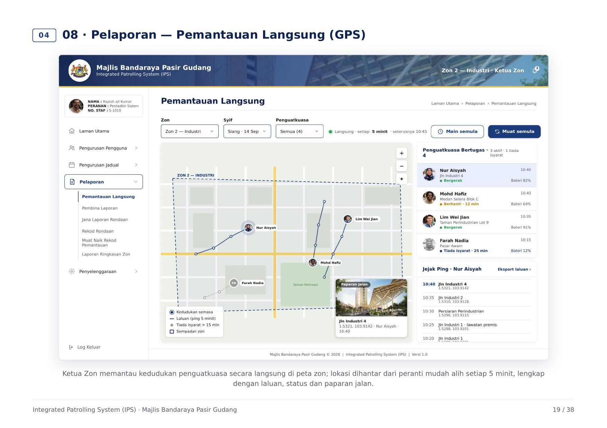
IPS, Integrated Patrolling System
A web portal for the council’s enforcement unit to schedule patrols by zone and track officers live on a map.
My roleRequirements, process flows, portal design, testing
4 zones5-min GPS refresh2026
Four years of council and enterprise systems: the requirements, the Figma screens, then UAT sign-off with Playwright and Appium.
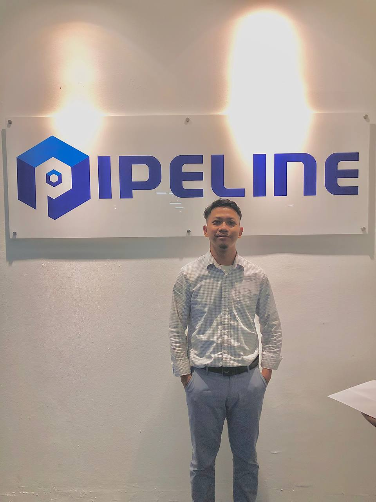
Four systems. What I built, what my role was, and what changed after.

A web portal for the council’s enforcement unit to schedule patrols by zone and track officers live on a map.
My roleRequirements, process flows, portal design, testing
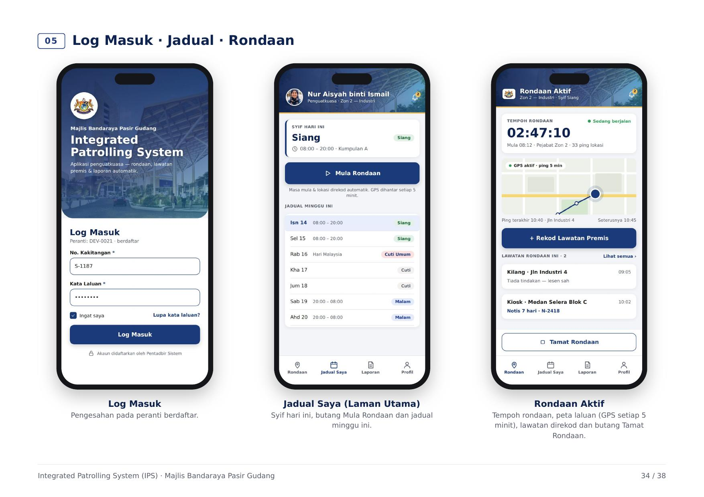
The Android app officers carry in the field: today's schedule, a live patrol timer and GPS on the route.
My roleUI design and end-to-end testing
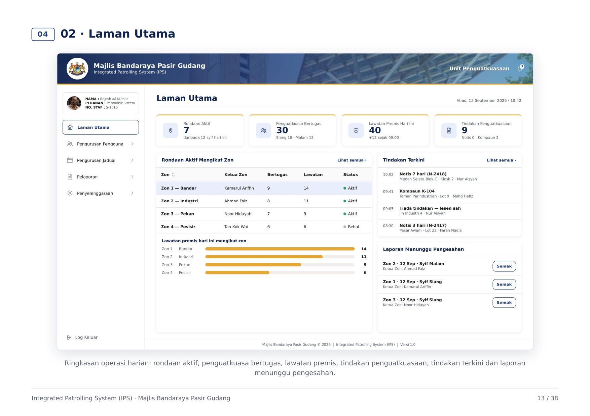
The whole portal designed in Figma before any code, so the client could click through it and changes cost minutes, not sprints.
My roleUX design, ERD, swimlane diagrams
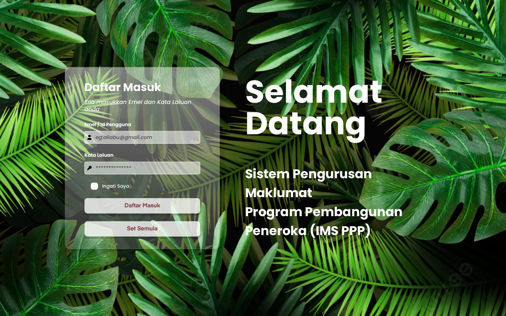
A dynamic form builder with multi-level approvals, complaints, PDF reports and a CMS portal.
My roleWrote URS and SRS, led data migration
Replaced days of manual re-testing with Playwright (web) and Appium (mobile) suites that run on every merge.
My roleDesigned and built the suite, Page Object Model
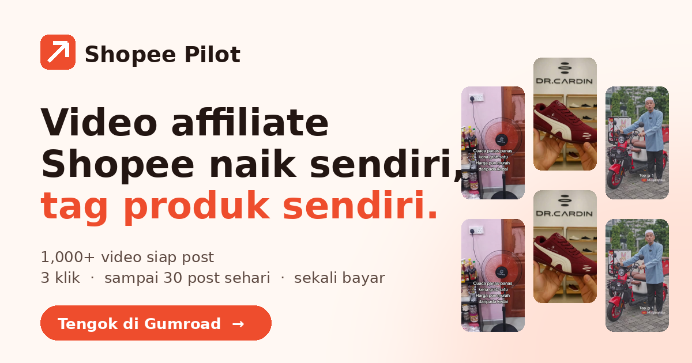
My own automation tool: reads product frames from video, writes Malay captions from 12 copy frameworks, and queues them in a review dashboard.
My roleBuilt it solo, end to end
This is how I picture who I am. Imagine a restaurant: I'm the waiter, the client is the customer, and the developer is the chef.
A client asking for a “user-friendly system” is like a customer asking for a “delicious tom yum”. My job is to turn that wish into an order the kitchen can actually cook. Flip through the story.
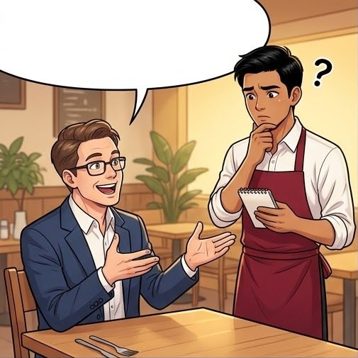
"Delicious" can't be tested. Neither can "fast" or "user-friendly". So I don't nod. I ask.
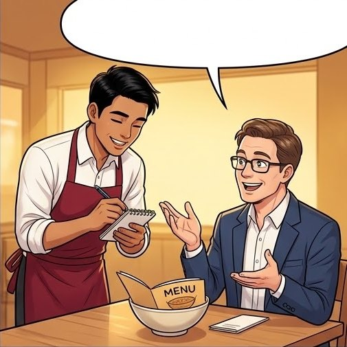
"Prawns, no peanuts, level 3." Now it's measurable. That's requirement gathering.
The chef gets a clear ticket, not a guess. That ticket is my URS / SRS for the developer.
"Exactly what I wanted!" Because I test it first (UAT and automated checks), the client never gets a surprise.
Most projects hand work between an analyst, a designer and a tester. I cover all three, so nothing gets lost between them.
Sit with the users, map how the work really happens, and pin down the rules.
Clickable Figma screens the client can try, so changes happen before code, not after.
One written source of truth that developers build from and the client signs.
Run UAT and FAT to sign-off, then automate regression so it stays green.
Here is a sample ticket that follows my usual flow: found in UAT, fixed by the developer, retested by me, then cleared for release.
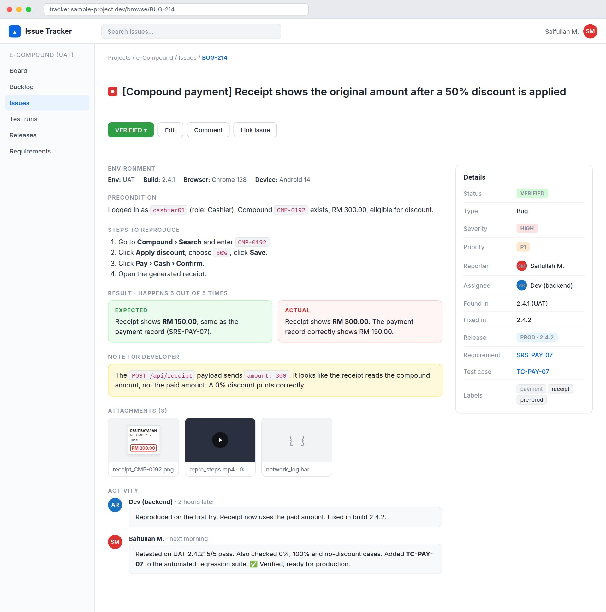
View full size ↗Sample ticket with made-up data, written the way I write real ones.
Grouped by the job they do on a project.
4+ years across government and enterprise projects.
ITCS went live for MBPG enforcement in October 2026. I ran the briefing, trained the officers, then stood in the depot while they used it on real vehicles.
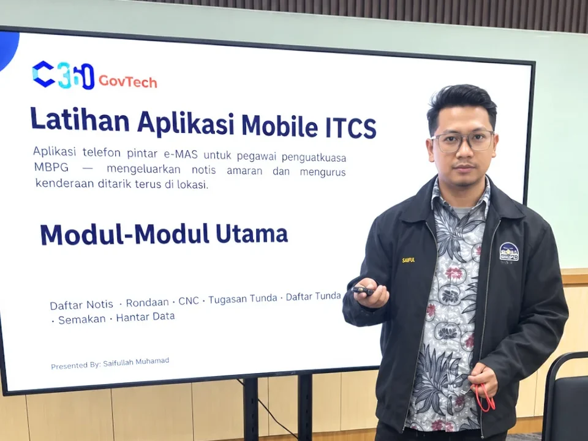
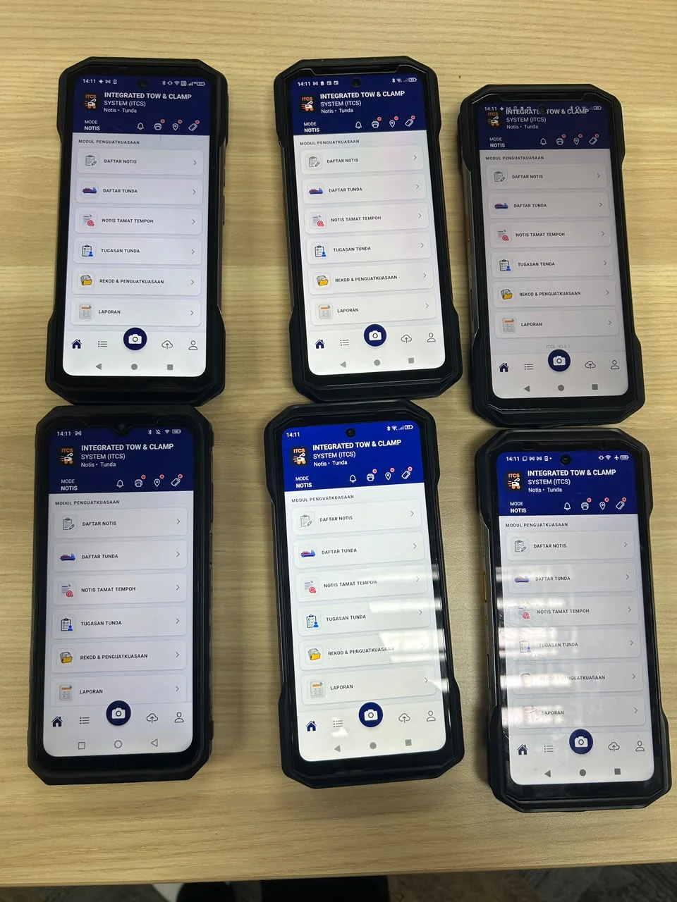
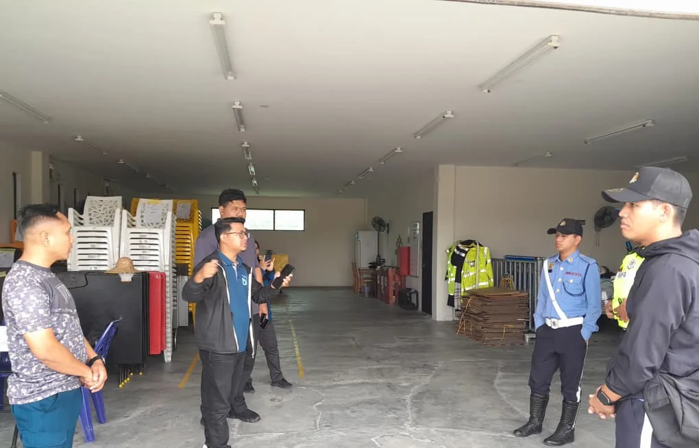
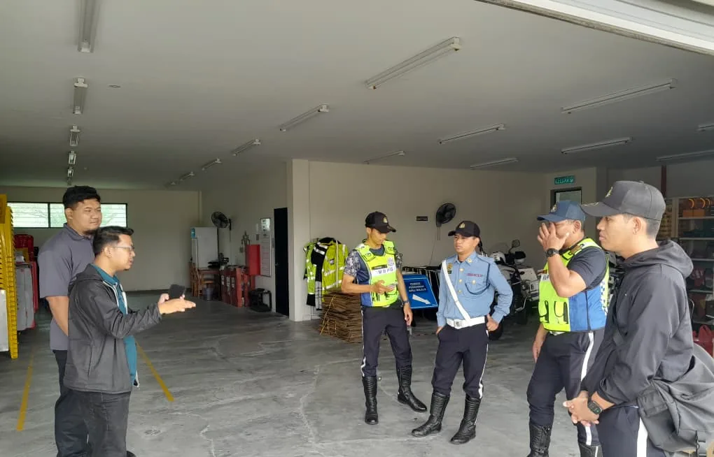
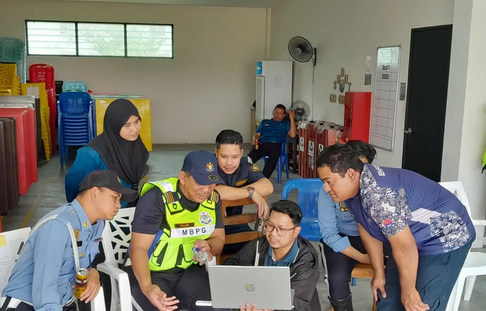